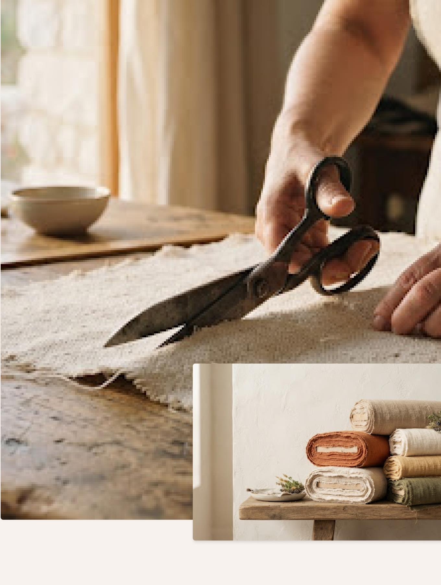
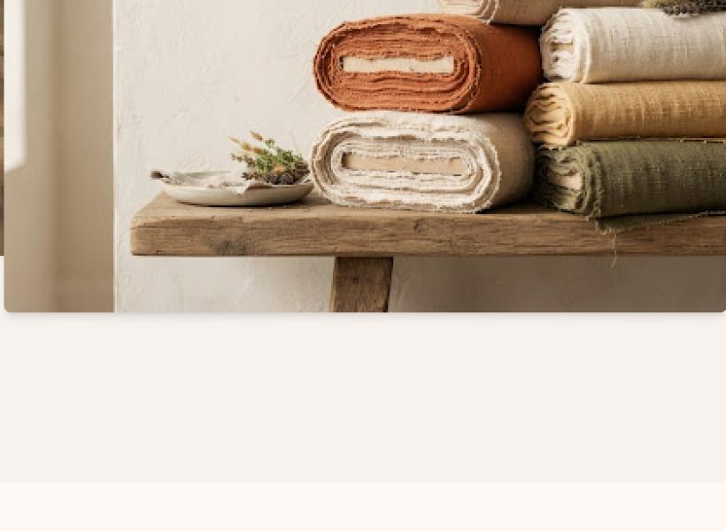
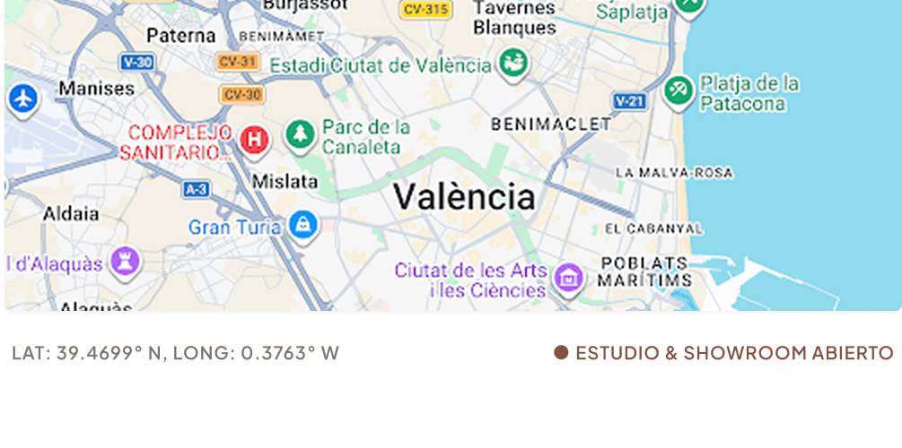

Hacemos pocas cosas, pero las hacemos para que duren toda la vida.
Chayil nació en Colombia como una respuesta al ruido ensordecedor de la moda rápida y desechable. Creemos que una prenda debe ganarse su lugar en tu armario diario mediante la honestidad de su construcción, la pureza de sus materiales y una presencia serena.
No seguimos el calendario de temporadas artificiales. Desarrollamos cada patrón con paciencia de artesano, perfeccionando caídas y densidades hasta que la prenda alcanza un equilibrio tangible: peso sin rigidez, suavidad sin debilidad.


El tacto de lo bien hecho. Algodón peinado y calma textil.
Trabajamos exclusivamente con algodón orgánico de fibra larga peinada. El proceso elimina las impurezas y las fibras cortas antes del hilado, dando lugar a un tejido denso, de caída arquitectónica y que envejece con nobleza tras cada lavado.
Cuatro principios que no negociamos jamás.
Cada decisión técnica, desde el calibre del hilo hasta el sistema de entrega local, responde a estas cuatro certezas fundacionales.
Materias Primas Nobles
Utilizamos exclusivamente algodón 100% orgánico certificado GOTS y sargas resistentes sin mezclas sintéticas ni fibras de baja torsión.
ORIGEN RESPONSABLEFabricación Ética
Talleres familiares en la Comunidad Colombiana y proximidad con condiciones laborales dignas, contratos indefinidos y salarios justos.
PRODUCCIÓN LOCALAtemporalidad Radical
Patrones depurados, sin logos llamativos ni colores caducos. Diseñado para vestir durante décadas sin perder relevancia visual.
DISEÑO CIRCULARCero Plásticos
Embalaje 100% biodegradable en papel kraft reciclado, cordajes de yute vegetal y cintas de celulosa compostable certificada FSC.
EMPAQUE NEUTRODesglose de costes honesto. Sin secretos ni inflaciones artificiales.
En la industria tradicional, una camiseta básica multiplica por 8 su coste real de manufactura a costa de materiales frágiles y mano de obra barata. En Chayil te mostramos exactamente dónde va cada euro que inviertes en nuestra Camiseta Heavyweight.
Camiseta Heavyweight 240g
PVP 48,00 €Ven a sentir los tejidos en nuestro estudio de Colombia.
Un espacio sereno en el centro histórico donde probar tallas, tocar las densidades de algodón y compartir un café de especialidad mientras dialogamos de confección.
